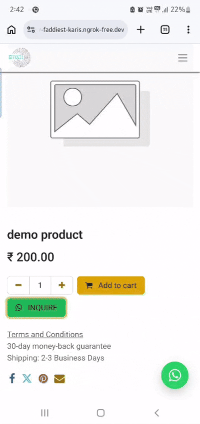
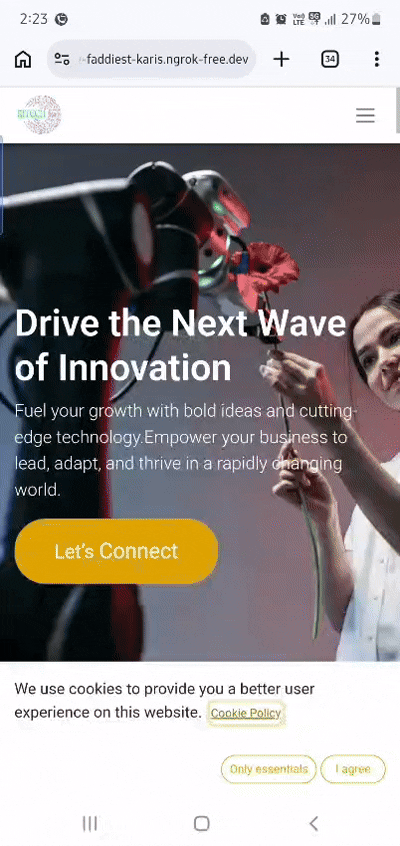
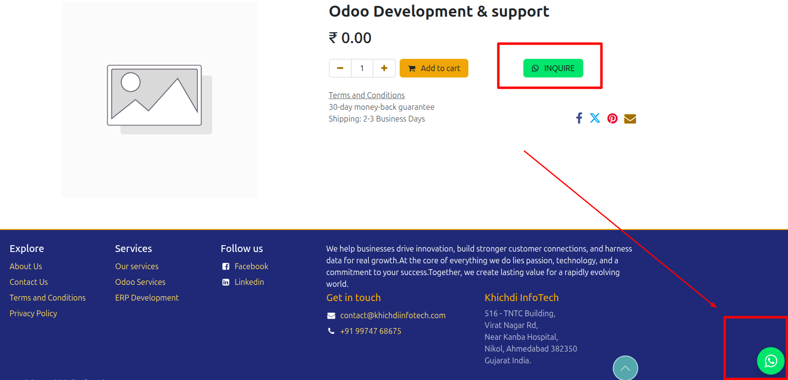
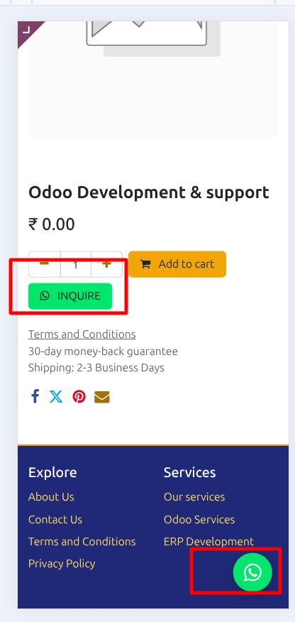
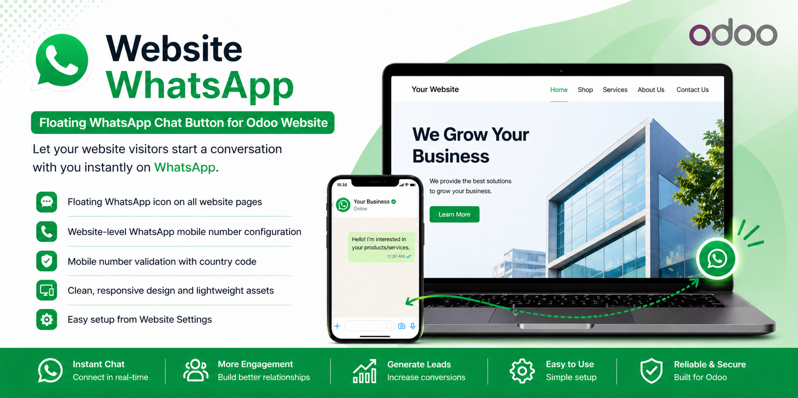

How It Works
1. Configure Inquiry Message
Set your default WhatsApp product inquiry message in Website settings.

Add a dedicated WhatsApp inquiry button on Odoo product pages to let visitors ask about products instantly.
This integration supports WhatsApp Desktop Application, WhatsApp Web Version, and WhatsApp Mobile App, so your website visitors can connect from any device.
Product inquiry flow and website WhatsApp integration preview.


Set your default WhatsApp product inquiry message in Website settings.
Keep both inquiry button and floating WhatsApp button visible with clean placement on desktop and mobile product pages.


Khichdi InfoTech provides complete Odoo services including implementation, customization, migration, and long-term support. We help businesses improve customer communication and lead capture with practical website solutions.
For assistance with this Website WhatsApp Chat Button module or any custom Odoo requirement, feel free to reach out.
+91-9974768675
Sales: contact@khichdiinfotech.com
Support: support@khichdiinfotech.com
